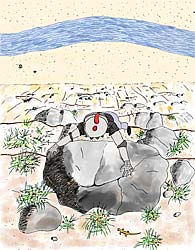

The Littlest Knight - Page 13

Returning outside he climbed down the cliff to the stream below. At the bottom there was plenty of water but nothing with which to carry it. Then he spied a chipped cup some knight had tossed from above. Carefully picking it from the sand he filled it as best as he could and climbed back up.But when he got back to the dragon he discovered that not only had the cup been chipped but it had a crack he had not seen. What little water there was had drained out while he was climbing. He approached the dragon and said, "I'm sorry. I meant to help you, I really did. But the cup is empty."
[ Top ]
[ Previous Page ] - [ Contents ] - [ Next Page ]Copyright ©1994 Carol Moore. All rights reserved.